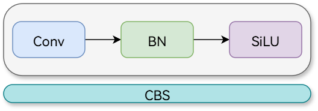
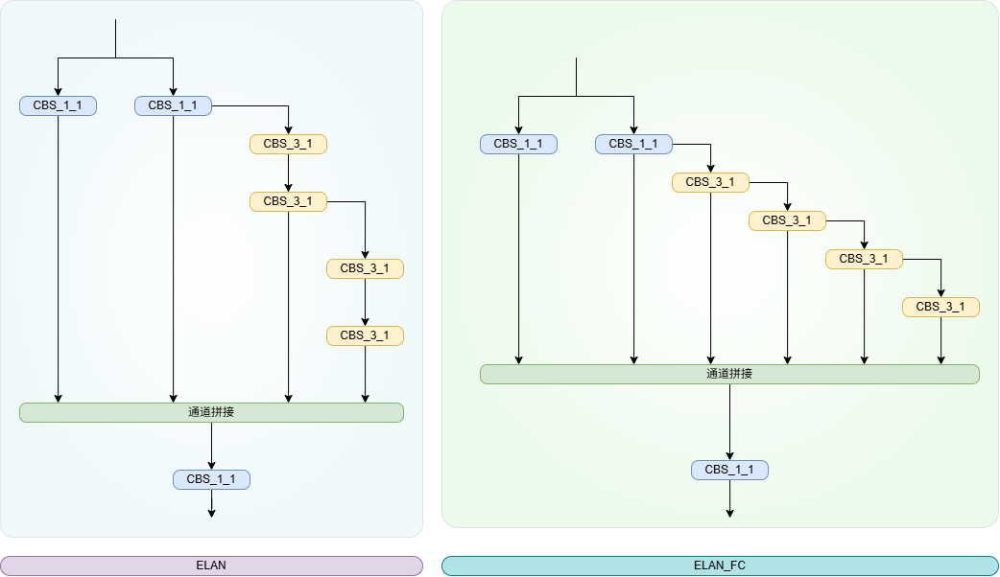
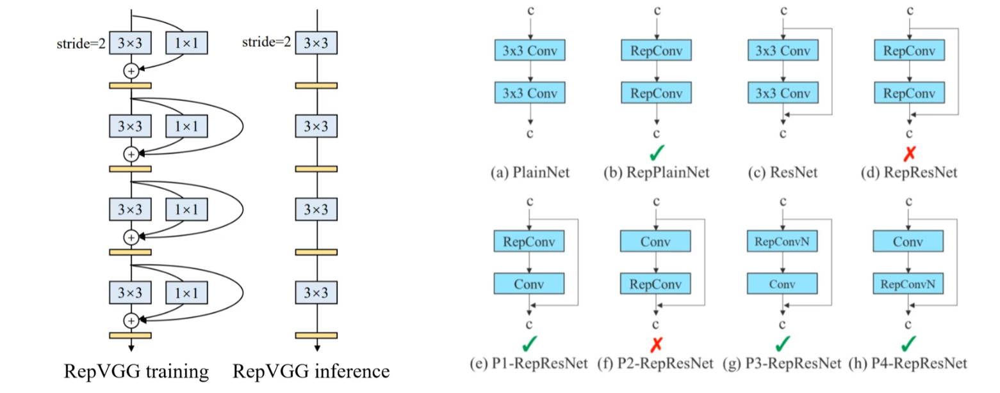
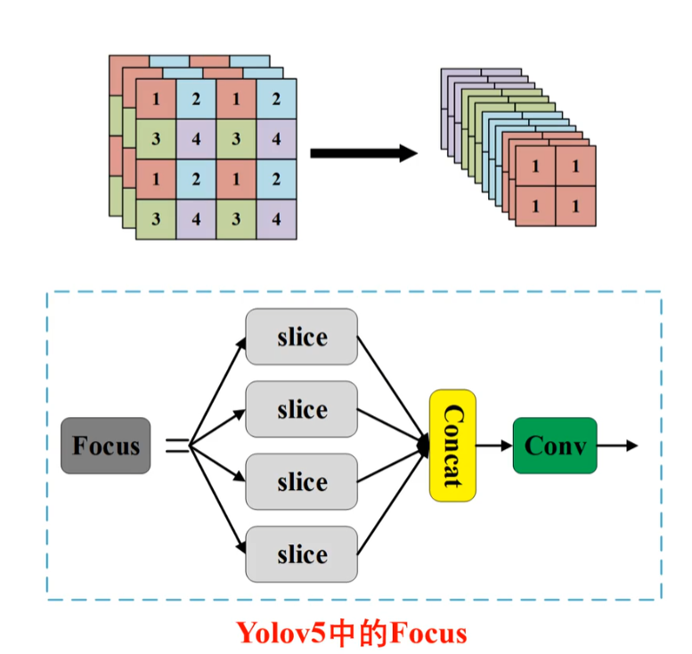
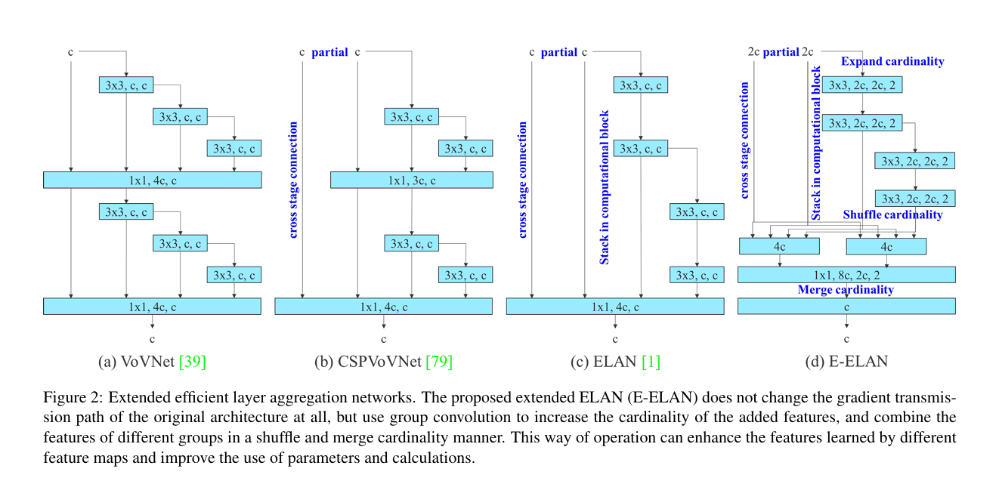

# YOLOv7 with WongKinYiu YOLOv7
什么是 YOLOv7，为什么它被认为是实时目标检测领域的一项突破？
YOLOv7 于 2022 年 7 月发布，是一款重要的实时目标检测模型，在发布时实现了卓越的速度和精度。它在参数使用和推理速度方面均超越了 YOLOX、YOLOv5 和 PPYOLOE 等同期模型。YOLOv7 的显著特点包括其模型重参数化和动态标签分配，这些优化在不增加推理成本的情况下提升了其性能。有关其架构以及与其他最先进目标检测器比较指标的更多技术细节，请参阅 YOLOv7 论文。
YOLOv7 如何改进 YOLOv4 和 YOLOv5 等之前的 YOLO 模型？
YOLOv7 引入了多项创新，包括模型重参数化和动态标签分配，这些创新增强了训练过程并提高了推理精度。与 YOLOv5 相比，YOLOv7 显著提升了速度和精度。例如，与 YOLOv5-X 相比，YOLOv7-X 的精度提高了 2.2%，参数量减少了 22%。详细比较可在性能表 “YOLOv7 与 SOTA 目标检测器比较” 中找到。****
# 原文
【YOLOv7: Trainable bag-of-freebies sets new state-of-the-art for real-time object detectors】：https://arxiv.org/abs/2207.02696
# 克隆源码并安装
git clone https://github.com/WongKinYiu/yolov7 |
cd yolov7 | |
pip install -r requirements.txt |
# 检测
修改两处直接运行：
parser.add_argument('--source', type=str, default='0', help='source') # file/folder, 0 for webcam | |
parser.add_argument('--img-size', type=int, default=320, help='inference size (pixels)') |
# 看看模型
以下基于 yolov7.yaml
from n params module arguments | |
0 -1 1 928 models.common.Conv [3, 32, 3, 1] | |
1 -1 1 18560 models.common.Conv [32, 64, 3, 2] | |
2 -1 1 36992 models.common.Conv [64, 64, 3, 1] | |
3 -1 1 73984 models.common.Conv [64, 128, 3, 2] | |
4 -1 1 8320 models.common.Conv [128, 64, 1, 1] | |
5 -2 1 8320 models.common.Conv [128, 64, 1, 1] | |
6 -1 1 36992 models.common.Conv [64, 64, 3, 1] | |
7 -1 1 36992 models.common.Conv [64, 64, 3, 1] | |
8 -1 1 36992 models.common.Conv [64, 64, 3, 1] | |
9 -1 1 36992 models.common.Conv [64, 64, 3, 1] | |
10 [-1, -3, -5, -6] 1 0 models.common.Concat [1] | |
11 -1 1 66048 models.common.Conv [256, 256, 1, 1] | |
12 -1 1 0 models.common.MP [] | |
13 -1 1 33024 models.common.Conv [256, 128, 1, 1] | |
14 -3 1 33024 models.common.Conv [256, 128, 1, 1] | |
15 -1 1 147712 models.common.Conv [128, 128, 3, 2] | |
16 [-1, -3] 1 0 models.common.Concat [1] | |
17 -1 1 33024 models.common.Conv [256, 128, 1, 1] | |
18 -2 1 33024 models.common.Conv [256, 128, 1, 1] | |
19 -1 1 147712 models.common.Conv [128, 128, 3, 1] | |
20 -1 1 147712 models.common.Conv [128, 128, 3, 1] | |
21 -1 1 147712 models.common.Conv [128, 128, 3, 1] | |
22 -1 1 147712 models.common.Conv [128, 128, 3, 1] | |
23 [-1, -3, -5, -6] 1 0 models.common.Concat [1] | |
24 -1 1 263168 models.common.Conv [512, 512, 1, 1] | |
25 -1 1 0 models.common.MP [] | |
26 -1 1 131584 models.common.Conv [512, 256, 1, 1] | |
27 -3 1 131584 models.common.Conv [512, 256, 1, 1] | |
28 -1 1 590336 models.common.Conv [256, 256, 3, 2] | |
29 [-1, -3] 1 0 models.common.Concat [1] | |
30 -1 1 131584 models.common.Conv [512, 256, 1, 1] | |
31 -2 1 131584 models.common.Conv [512, 256, 1, 1] | |
32 -1 1 590336 models.common.Conv [256, 256, 3, 1] | |
33 -1 1 590336 models.common.Conv [256, 256, 3, 1] | |
34 -1 1 590336 models.common.Conv [256, 256, 3, 1] | |
35 -1 1 590336 models.common.Conv [256, 256, 3, 1] | |
36 [-1, -3, -5, -6] 1 0 models.common.Concat [1] | |
37 -1 1 1050624 models.common.Conv [1024, 1024, 1, 1] | |
38 -1 1 0 models.common.MP [] | |
39 -1 1 525312 models.common.Conv [1024, 512, 1, 1] | |
40 -3 1 525312 models.common.Conv [1024, 512, 1, 1] | |
41 -1 1 2360320 models.common.Conv [512, 512, 3, 2] | |
42 [-1, -3] 1 0 models.common.Concat [1] | |
43 -1 1 262656 models.common.Conv [1024, 256, 1, 1] | |
44 -2 1 262656 models.common.Conv [1024, 256, 1, 1] | |
45 -1 1 590336 models.common.Conv [256, 256, 3, 1] | |
46 -1 1 590336 models.common.Conv [256, 256, 3, 1] | |
47 -1 1 590336 models.common.Conv [256, 256, 3, 1] | |
48 -1 1 590336 models.common.Conv [256, 256, 3, 1] | |
49 [-1, -3, -5, -6] 1 0 models.common.Concat [1] | |
50 -1 1 1050624 models.common.Conv [1024, 1024, 1, 1] | |
51 -1 1 7609344 models.common.SPPCSPC [1024, 512, 1] | |
52 -1 1 131584 models.common.Conv [512, 256, 1, 1] | |
53 -1 1 0 torch.nn.modules.upsampling.Upsample [None, 2, 'nearest'] | |
54 37 1 262656 models.common.Conv [1024, 256, 1, 1] | |
55 [-1, -2] 1 0 models.common.Concat [1] | |
56 -1 1 131584 models.common.Conv [512, 256, 1, 1] | |
57 -2 1 131584 models.common.Conv [512, 256, 1, 1] | |
58 -1 1 295168 models.common.Conv [256, 128, 3, 1] | |
59 -1 1 147712 models.common.Conv [128, 128, 3, 1] | |
60 -1 1 147712 models.common.Conv [128, 128, 3, 1] | |
61 -1 1 147712 models.common.Conv [128, 128, 3, 1] | |
62[-1, -2, -3, -4, -5, -6] 1 0 models.common.Concat [1] | |
63 -1 1 262656 models.common.Conv [1024, 256, 1, 1] | |
64 -1 1 33024 models.common.Conv [256, 128, 1, 1] | |
65 -1 1 0 torch.nn.modules.upsampling.Upsample [None, 2, 'nearest'] | |
66 24 1 65792 models.common.Conv [512, 128, 1, 1] | |
67 [-1, -2] 1 0 models.common.Concat [1] | |
68 -1 1 33024 models.common.Conv [256, 128, 1, 1] | |
69 -2 1 33024 models.common.Conv [256, 128, 1, 1] | |
70 -1 1 73856 models.common.Conv [128, 64, 3, 1] | |
71 -1 1 36992 models.common.Conv [64, 64, 3, 1] | |
72 -1 1 36992 models.common.Conv [64, 64, 3, 1] | |
73 -1 1 36992 models.common.Conv [64, 64, 3, 1] | |
74[-1, -2, -3, -4, -5, -6] 1 0 models.common.Concat [1] | |
75 -1 1 65792 models.common.Conv [512, 128, 1, 1] | |
76 -1 1 0 models.common.MP [] | |
77 -1 1 16640 models.common.Conv [128, 128, 1, 1] | |
78 -3 1 16640 models.common.Conv [128, 128, 1, 1] | |
79 -1 1 147712 models.common.Conv [128, 128, 3, 2] | |
80 [-1, -3, 63] 1 0 models.common.Concat [1] | |
81 -1 1 131584 models.common.Conv [512, 256, 1, 1] | |
82 -2 1 131584 models.common.Conv [512, 256, 1, 1] | |
83 -1 1 295168 models.common.Conv [256, 128, 3, 1] | |
84 -1 1 147712 models.common.Conv [128, 128, 3, 1] | |
85 -1 1 147712 models.common.Conv [128, 128, 3, 1] | |
86 -1 1 147712 models.common.Conv [128, 128, 3, 1] | |
87[-1, -2, -3, -4, -5, -6] 1 0 models.common.Concat [1] | |
88 -1 1 262656 models.common.Conv [1024, 256, 1, 1] | |
89 -1 1 0 models.common.MP [] | |
90 -1 1 66048 models.common.Conv [256, 256, 1, 1] | |
91 -3 1 66048 models.common.Conv [256, 256, 1, 1] | |
92 -1 1 590336 models.common.Conv [256, 256, 3, 2] | |
93 [-1, -3, 51] 1 0 models.common.Concat [1] | |
94 -1 1 525312 models.common.Conv [1024, 512, 1, 1] | |
95 -2 1 525312 models.common.Conv [1024, 512, 1, 1] | |
96 -1 1 1180160 models.common.Conv [512, 256, 3, 1] | |
97 -1 1 590336 models.common.Conv [256, 256, 3, 1] | |
98 -1 1 590336 models.common.Conv [256, 256, 3, 1] | |
99 -1 1 590336 models.common.Conv [256, 256, 3, 1] | |
100[-1, -2, -3, -4, -5, -6] 1 0 models.common.Concat [1] | |
101 -1 1 1049600 models.common.Conv [2048, 512, 1, 1] | |
102 75 1 328704 models.common.RepConv [128, 256, 3, 1] | |
103 88 1 1312768 models.common.RepConv [256, 512, 3, 1] | |
104 101 1 5246976 models.common.RepConv [512, 1024, 3, 1] | |
105 [102, 103, 104] 1 460282 IDetect [80, [[12, 16, 19, 36, 40, 28], [36, 75, 76, 55, 72, 146], [142, 110, 192, 243, 459, 401]], [256, 512, 1024]] |
# parameters | |
nc: 80 # number of classes | |
depth_multiple: 1.0 # model depth multiple | |
width_multiple: 1.0 # layer channel multiple | |
# anchors | |
anchors: | |
- [12,16, 19,36, 40,28] # P3/8 | |
- [36,75, 76,55, 72,146] # P4/16 | |
- [142,110, 192,243, 459,401] # P5/32 | |
# yolov7 backbone | |
backbone: | |
# [from, number, module, args] | |
[[-1, 1, Conv, [32, 3, 1]], # 0 | |
[-1, 1, Conv, [64, 3, 2]], # 1-P1/2 | |
[-1, 1, Conv, [64, 3, 1]], | |
[-1, 1, Conv, [128, 3, 2]], # 3-P2/4 | |
[-1, 1, Conv, [64, 1, 1]], | |
[-2, 1, Conv, [64, 1, 1]], | |
[-1, 1, Conv, [64, 3, 1]], | |
[-1, 1, Conv, [64, 3, 1]], | |
[-1, 1, Conv, [64, 3, 1]], | |
[-1, 1, Conv, [64, 3, 1]], | |
[[-1, -3, -5, -6], 1, Concat, [1]], | |
[-1, 1, Conv, [256, 1, 1]], # 11 | |
[-1, 1, MP, []], | |
[-1, 1, Conv, [128, 1, 1]], | |
[-3, 1, Conv, [128, 1, 1]], | |
[-1, 1, Conv, [128, 3, 2]], | |
[[-1, -3], 1, Concat, [1]], # 16-P3/8 | |
[-1, 1, Conv, [128, 1, 1]], | |
[-2, 1, Conv, [128, 1, 1]], | |
[-1, 1, Conv, [128, 3, 1]], | |
[-1, 1, Conv, [128, 3, 1]], | |
[-1, 1, Conv, [128, 3, 1]], | |
[-1, 1, Conv, [128, 3, 1]], | |
[[-1, -3, -5, -6], 1, Concat, [1]], | |
[-1, 1, Conv, [512, 1, 1]], # 24 | |
[-1, 1, MP, []], | |
[-1, 1, Conv, [256, 1, 1]], | |
[-3, 1, Conv, [256, 1, 1]], | |
[-1, 1, Conv, [256, 3, 2]], | |
[[-1, -3], 1, Concat, [1]], # 29-P4/16 | |
[-1, 1, Conv, [256, 1, 1]], | |
[-2, 1, Conv, [256, 1, 1]], | |
[-1, 1, Conv, [256, 3, 1]], | |
[-1, 1, Conv, [256, 3, 1]], | |
[-1, 1, Conv, [256, 3, 1]], | |
[-1, 1, Conv, [256, 3, 1]], | |
[[-1, -3, -5, -6], 1, Concat, [1]], | |
[-1, 1, Conv, [1024, 1, 1]], # 37 | |
[-1, 1, MP, []], | |
[-1, 1, Conv, [512, 1, 1]], | |
[-3, 1, Conv, [512, 1, 1]], | |
[-1, 1, Conv, [512, 3, 2]], | |
[[-1, -3], 1, Concat, [1]], # 42-P5/32 | |
[-1, 1, Conv, [256, 1, 1]], | |
[-2, 1, Conv, [256, 1, 1]], | |
[-1, 1, Conv, [256, 3, 1]], | |
[-1, 1, Conv, [256, 3, 1]], | |
[-1, 1, Conv, [256, 3, 1]], | |
[-1, 1, Conv, [256, 3, 1]], | |
[[-1, -3, -5, -6], 1, Concat, [1]], | |
[-1, 1, Conv, [1024, 1, 1]], # 50 | |
] | |
# yolov7 head | |
head: | |
[[-1, 1, SPPCSPC, [512]], # 51 | |
[-1, 1, Conv, [256, 1, 1]], | |
[-1, 1, nn.Upsample, [None, 2, 'nearest']], | |
[37, 1, Conv, [256, 1, 1]], # route backbone P4 | |
[[-1, -2], 1, Concat, [1]], | |
[-1, 1, Conv, [256, 1, 1]], | |
[-2, 1, Conv, [256, 1, 1]], | |
[-1, 1, Conv, [128, 3, 1]], | |
[-1, 1, Conv, [128, 3, 1]], | |
[-1, 1, Conv, [128, 3, 1]], | |
[-1, 1, Conv, [128, 3, 1]], | |
[[-1, -2, -3, -4, -5, -6], 1, Concat, [1]], | |
[-1, 1, Conv, [256, 1, 1]], # 63 | |
[-1, 1, Conv, [128, 1, 1]], | |
[-1, 1, nn.Upsample, [None, 2, 'nearest']], | |
[24, 1, Conv, [128, 1, 1]], # route backbone P3 | |
[[-1, -2], 1, Concat, [1]], | |
[-1, 1, Conv, [128, 1, 1]], | |
[-2, 1, Conv, [128, 1, 1]], | |
[-1, 1, Conv, [64, 3, 1]], | |
[-1, 1, Conv, [64, 3, 1]], | |
[-1, 1, Conv, [64, 3, 1]], | |
[-1, 1, Conv, [64, 3, 1]], | |
[[-1, -2, -3, -4, -5, -6], 1, Concat, [1]], | |
[-1, 1, Conv, [128, 1, 1]], # 75 | |
[-1, 1, MP, []], | |
[-1, 1, Conv, [128, 1, 1]], | |
[-3, 1, Conv, [128, 1, 1]], | |
[-1, 1, Conv, [128, 3, 2]], | |
[[-1, -3, 63], 1, Concat, [1]], | |
[-1, 1, Conv, [256, 1, 1]], | |
[-2, 1, Conv, [256, 1, 1]], | |
[-1, 1, Conv, [128, 3, 1]], | |
[-1, 1, Conv, [128, 3, 1]], | |
[-1, 1, Conv, [128, 3, 1]], | |
[-1, 1, Conv, [128, 3, 1]], | |
[[-1, -2, -3, -4, -5, -6], 1, Concat, [1]], | |
[-1, 1, Conv, [256, 1, 1]], # 88 | |
[-1, 1, MP, []], | |
[-1, 1, Conv, [256, 1, 1]], | |
[-3, 1, Conv, [256, 1, 1]], | |
[-1, 1, Conv, [256, 3, 2]], | |
[[-1, -3, 51], 1, Concat, [1]], | |
[-1, 1, Conv, [512, 1, 1]], | |
[-2, 1, Conv, [512, 1, 1]], | |
[-1, 1, Conv, [256, 3, 1]], | |
[-1, 1, Conv, [256, 3, 1]], | |
[-1, 1, Conv, [256, 3, 1]], | |
[-1, 1, Conv, [256, 3, 1]], | |
[[-1, -2, -3, -4, -5, -6], 1, Concat, [1]], | |
[-1, 1, Conv, [512, 1, 1]], # 101 | |
[75, 1, RepConv, [256, 3, 1]], | |
[88, 1, RepConv, [512, 3, 1]], | |
[101, 1, RepConv, [1024, 3, 1]], | |
[[102,103,104], 1, IDetect, [nc, anchors]], # Detect(P3, P4, P5) | |
] |
其他的我觉得没什么可说了，这里主要解析一下 v7 的特色模块。
# AutoPad
这个函数我觉得不错，主要是用于自动计算卷积层的填充值，以实现 输入输出尺寸相同的 **“same” 卷积 **。
def autopad(k, p=None): # kernel, padding | |
# Pad to 'same' | |
if p is None: | |
p = k // 2 if isinstance(k, int) else [x // 2 for x in k] # auto-pad | |
return p |
# AutoPad with dilation
def autopad(k, p=None, d=1): # kernel, padding, dilation | |
# Pad to 'same' shape with dilation | |
if d > 1: | |
# 实际核大小需要考虑膨胀率 | |
k = d * (k - 1) + 1 if isinstance(k, int) else [d * (x - 1) + 1 for x in k] | |
if p is None: | |
p = k // 2 if isinstance(k, int) else [x // 2 for x in k] # auto-pad | |
return p |
# ELAN
ELAN 出于以下设计考虑 ——“如何设计一个高效的网络？” 得出结论是：通过控制最短最长梯度路径，更深的网络可以有效地进行学习并更好地收敛。
[-1, 1, Conv, [64, 1, 1]], | |
[-2, 1, Conv, [64, 1, 1]], | |
[-1, 1, Conv, [64, 3, 1]], | |
[-1, 1, Conv, [64, 3, 1]], | |
[-1, 1, Conv, [64, 3, 1]], | |
[-1, 1, Conv, [64, 3, 1]], | |
[[-1, -3, -5, -6], 1, Concat, [1]], | |
[-1, 1, Conv, [256, 1, 1]], # 11 |
严格来说，YOLOv7 使用的是它的升级版本 E-ELAN，你可以把它理解为 ELAN 的 “增强版”，它们的目标一致，但 E-ELAN 的方法更巧妙。为了让你更清晰地理解它的价值，我把它的作用和实现原理拆解为以下几点：
# MpActions
class MP(nn.Module): | |
def __init__(self, k=2): | |
super(MP, self).__init__() | |
self.m = nn.MaxPool2d(kernel_size=k, stride=k) | |
def forward(self, x): | |
return self.m(x) |
# SPPCSPC
class SPPCSPC(nn.Module): | |
# CSP https://github.com/WongKinYiu/CrossStagePartialNetworks | |
def __init__(self, c1, c2, n=1, shortcut=False, g=1, e=0.5, k=(5, 9, 13)): | |
super(SPPCSPC, self).__init__() | |
c_ = int(2 * c2 * e) # hidden channels | |
self.cv1 = Conv(c1, c_, 1, 1) | |
self.cv2 = Conv(c1, c_, 1, 1) | |
self.cv3 = Conv(c_, c_, 3, 1) | |
self.cv4 = Conv(c_, c_, 1, 1) | |
self.m = nn.ModuleList([nn.MaxPool2d(kernel_size=x, stride=1, padding=x // 2) for x in k]) | |
self.cv5 = Conv(4 * c_, c_, 1, 1) | |
self.cv6 = Conv(c_, c_, 3, 1) | |
self.cv7 = Conv(2 * c_, c2, 1, 1) | |
def forward(self, x): | |
x1 = self.cv4(self.cv3(self.cv1(x))) | |
y1 = self.cv6(self.cv5(torch.cat([x1] + [m(x1) for m in self.m], 1))) | |
y2 = self.cv2(x) | |
return self.cv7(torch.cat((y1, y2), dim=1)) |
这里挺妙的：
nn.ModuleList([nn.MaxPool2d(kernel_size=x, stride=1, padding=x // 2) for x in k]) |
这个池化操作当且仅当 x 是大于 1 的奇数时，输出不会改变特征图大小。
由尺寸计算公式： HO = (H + 2P - K) // S + 1 ，当 p=x//2 且 x 是奇数时， p=x//2=x-1 ，此时 HO = (H + 2P - K) // S + 1 = [(H + x - 1 - x) / 1] + 1 = H ，所以 HO = H 。
# ELAN-FC
这个变体的核心是更复杂的特征融合，核心在于创建了更多不同深度的梯度传播路径，训练时梯度能更好地反向传播，网络能同时利用浅层的细节和深层的语义，有点 UNet 的味道。
# RepConv
RepConv 是我认为 YOLOv7 最有意思的改进。
在训练阶段，RepConv 会构建一个复杂的多分支网络。它通常并行地包含 3x3 卷积、1x1 卷积，有时还会加上恒等连接。当模型训练完成，准备部署时，神奇的 “重参数化” 就发生了。通过一系列的变换，这个复杂的三分支结构会无损地融合成一个单一的 3x3 卷积层。
如果在 RepConv 中保留恒等连接分支，模型性能会下降。恒等连接会让梯度直接流过，与其他分支的梯度相互干扰，YOLOv7 中，作者最终采用了不带恒等连接的 RepConv。
# YOLOv7w6-ReOrg
Reorg 是一种 特征图重排操作，牺牲空间分辨率，换取通道维度，把细节信息 “压缩” 进通道里
假设输入特征图是：[B, C, H, W]，经过 Reorg-stride=2 后变成：[B, 4C, H/2, W/2] 也就是：高宽减半，通道数 ×4，不丢信息，只是重排。
在现在的 YOLO 系列里，Focus 基本可以认为没什么用了，甚至是被明确淘汰的设计。YOLOv7-w6-ReOrg 属于论文可写、工程慎用的改动。ReOrg 是有提升的，但提升很有限。
# 分组卷积
普通卷积：
conv = nn.Conv2d( | |
in_channels=64, | |
out_channels=128, | |
kernel_size=3, | |
stride=1, | |
padding=1 | |
) |
分组卷积：
conv = nn.Conv2d( | |
in_channels=64, | |
out_channels=128, | |
kernel_size=3, | |
stride=1, | |
padding=1, | |
groups=4 | |
) |
我推荐这样写：
class GroupConv(nn.Module): | |
def __init__(self, c1, c2, k=3, s=1, g=4): | |
super().__init__() | |
self.conv = nn.Conv2d( | |
c1, c2, k, s, | |
padding=k // 2, | |
groups=g, | |
bias=False | |
) | |
self.bn = nn.BatchNorm2d(c2) | |
self.act = nn.SiLU() | |
def forward(self, x): | |
return self.act(self.bn(self.conv(x))) |
不要乱设 groups：
Conv2d(64, 128, 3, groups=8) # 64 % 8 可以，但 128 % 8 也必须可以
小通道不要用 group
Conv2d(32, 32, 3, groups=4) # 很容易掉精度
不要连续 group conv
GroupConv → GroupConv → GroupConv ❌
中间一定要有 1×1 Conv
backbone 前几层不要用用 group，因为特征太原始，这回直接限制表达能力。
group 不是 提升精度，它是省算力，不是涨 mAP 的神器。
# E-ELAN
# 参考
- 【yolov7 目标检测原理与实战】：https://www.bilibili.com/video/BV1QeCVYuEex
- 【这是一篇对 YOLOv7 的详细解读和剖析】：https://zhuanlan.zhihu.com/p/540068099